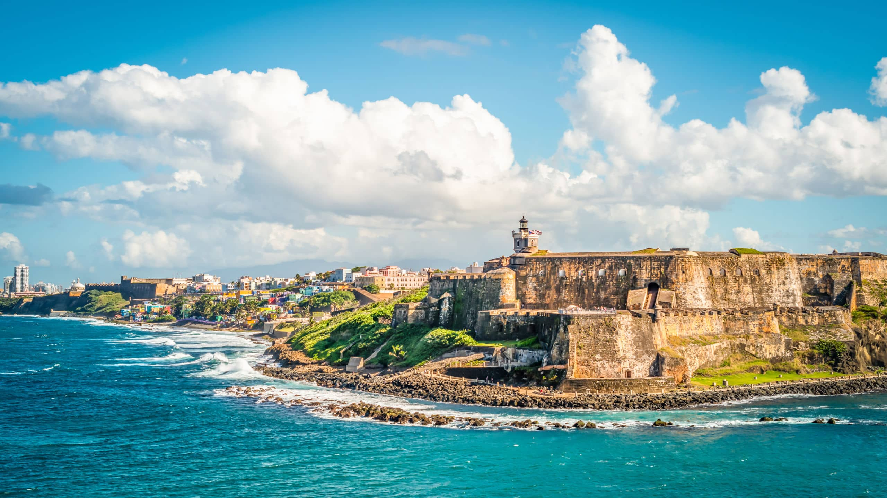

Best Places I've Traveled To!
Discover the Beauty of Puerto Rico, Costa Rica, and Tahiti
Puerto Rico
Traveling to Puerto Rico offers a vibrant blend of culture, history, and breathtaking scenery. Known as the "Island of Enchantment," Puerto Rico is a tropical paradise boasting golden beaches, lush rainforests, and that light up like magic. Its rich history is evident in Old San Juan, where cobblestone streets and colorful colonial buildings tell stories of the past. Beyond its beauty, Puerto Rico is a gateway to warm hospitality and delicious cuisine, including mofongo and tostones. Whether exploring El Yunque National Forest or dancing to the rhythms of salsa in a local plaza, Puerto Rico promises an unforgettable experience.- Great Beaches
- Delicious Food
- mofongo
- arroz con gandules
- tostones
- Friendly People
Fun Fact: Puerto Rico has bioluminescent bays, where microscopic organisms light up the water at night, creating a spectacular glowing display that visitors can kayak through; this is considered one of the brightest bioluminescent bays in the world. üèùÔ∏èüáµüá∑üççüå∫

Costa Rica
Costa Rica, often called the "rich coast," is a haven for nature lovers and adventurers. This Central American gem is celebrated for its biodiversity, with opportunities to encounter sloths, toucans, and monkeys in their natural habitat. From the misty cloud forests of Monteverde to the pristine beaches of Manuel Antonio, Costa Rica is an ecotourist's dream. Thrill-seekers can zip-line through jungles, hike volcanoes, or surf world-class waves. Additionally, the country's "pura vida" lifestyle embodies a philosophy of enjoying life's simple pleasures, making every traveler feel welcome and rejuvenated. One of the best places to visit is the Manuel Antonio Park.
Fun Fact: Costa Rica is home to about 5% of the world's biodiversity despite covering only 0.03% of the Earth's surface? It's a haven for nature lovers, with over 500,000 species, including sloths, colorful frogs, and exotic birds. Plus, Costa Rica has 29 national parks and was one of the first countries to pledge to become carbon-neutral! üåøüåé

Tahiti
Tahiti, the heart of French Polynesia, is synonymous with paradise. Its crystal-clear lagoons, overwater bungalows, and vibrant coral reefs make it a dream destination for relaxation and romance. Beyond its idyllic beauty, Tahiti offers a rich Polynesian culture, with traditions of storytelling, dance, and art passed down through generations. Travelers can explore the island's volcanic landscapes, savor fresh seafood, or immerse themselves in the warm embrace of the local community. Tahiti's tranquility and charm make it the ultimate escape from the ordinary, leaving visitors with a profound sense of peace and wonder.Each of these destinations offers unique experiences that showcase the beauty of the natural world, the richness of diverse cultures, and the joy of connecting with others, making them must-visit places for anyone seeking adventure and inspiration.
Fun Fact: Tahiti is part of French Polynesia, and while it's known for its stunning overwater bungalows and black sand beaches, it's also the birthplace of surfing! üåä The ancient Polynesians practiced a form of wave-riding called "he'e nalu", and Tahiti continues to be a world-class surf destination, home to the famous reef break Teahupo'o, which hosts international surfing competitions.
Jump To Top